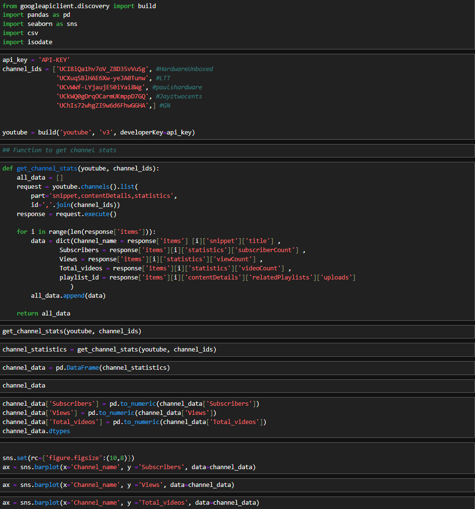
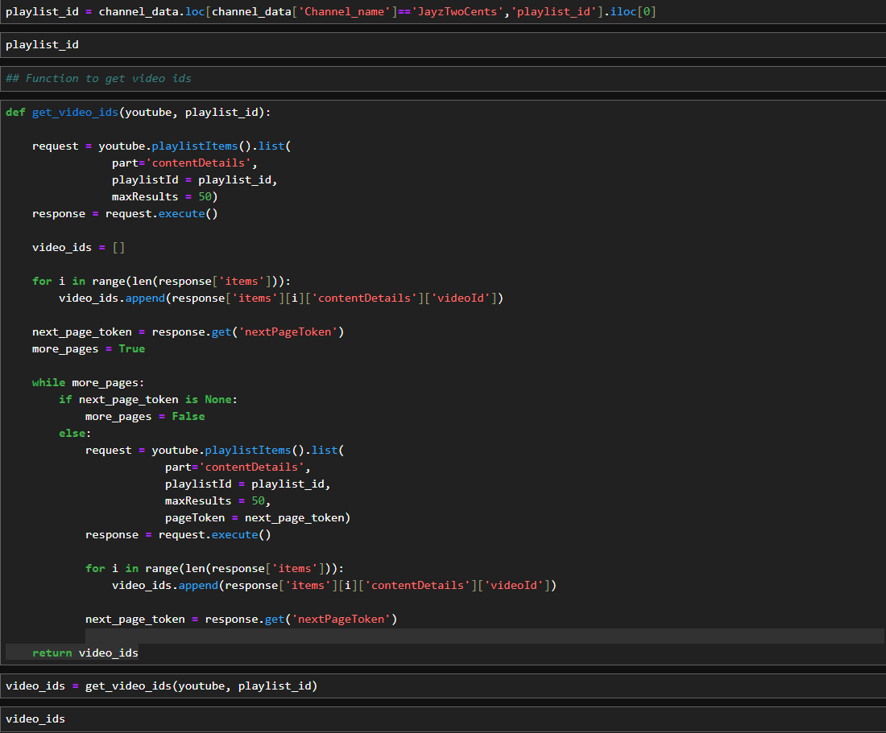
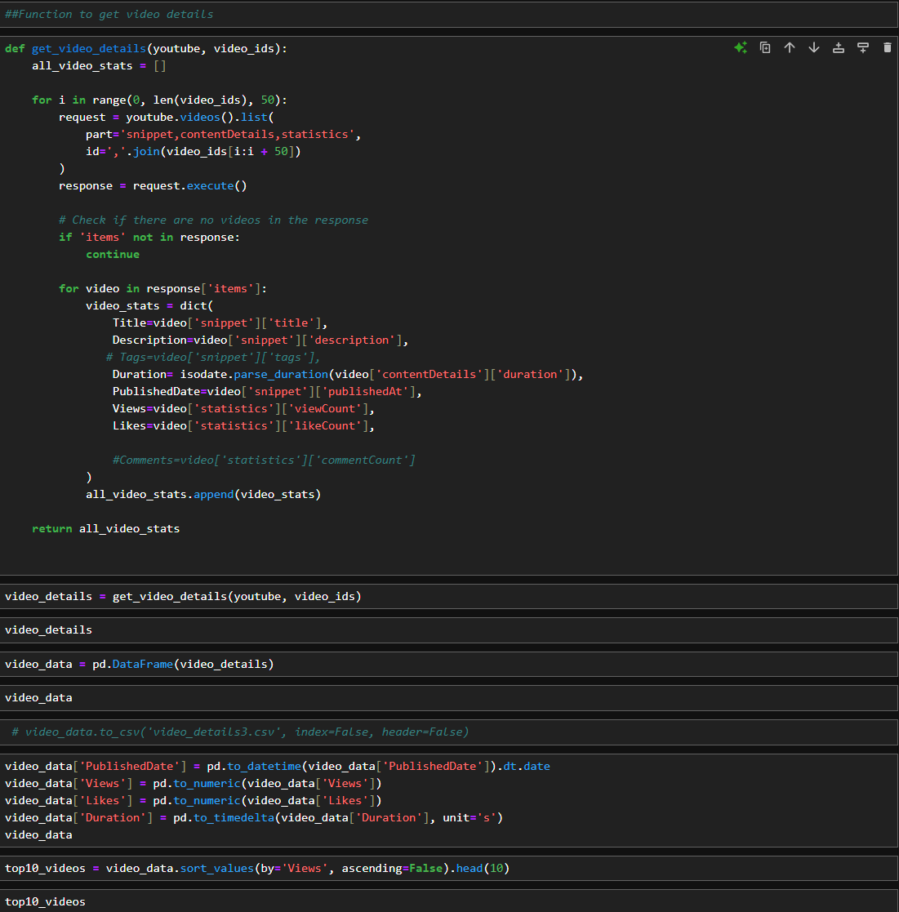
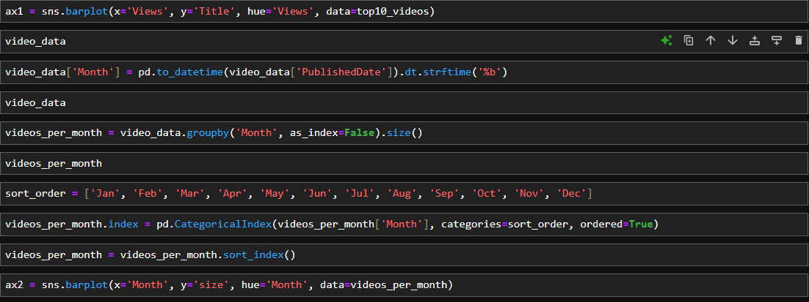

Youtube API Project
After delving into the YouTube API documentation and conducting some preliminary data exploration, I focused on channel statistics.
I began by importing the necessary libraries for this project, then configured the API key and channel IDs.
Next, I developed a function to iterate through the data returned by the API and organize it into a
list. I instantiated this function with the appropriate variables to generate the all_data list and then
structured it into a pandas DataFrame.
After performing some minor transformations, the data was ready to be visualized using Seaborn.

Subscribers
Views
Total Videos
Let’s dive into the analysis of a single channel. First, I created a variable to specify the channel and its
ID. Then, I developed a function to retrieve the video IDs for all videos associated with that channel
and compile them into a list.
Using this list, I created another function to gather statistics for each video on the channel. With the
data collected, I organized it into a pandas DataFrame.
After making a few minor transformations, the data was ready for visualization with Seaborn.
  
Top 10 videos by views
Top 10 videos by Likes
Videos by month
I thoroughly enjoyed working on this project. As someone with a deep passion for PC hardware, it
was exciting to engage in data engineering and analysis on topics I love. The versatility of Python's
libraries is truly remarkable. Additionally, I explored a similar project focused on a single channel and
visualized the data using Power BI. The YouTube API proved to be a powerful tool for uncovering
valuable insights, and I’m confident I’ll leverage it again in the future.
Copyright © Kyle. Made with by Kyle Dukes